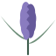

Māori Legend
Manuka Tea
This is a superior blend of Sweet Tea (Lithocarpus polystachyus Rehd Tea) and Mānuka leaves with a variety of benefits.
Explore Manuka TeaThe Collection
Three blends, each built on Lithocarpus polystachyus Rehd (Sweet Tea) and a native New Zealand botanical.
Māori Legend
This is a superior blend of Sweet Tea (Lithocarpus polystachyus Rehd Tea) and Mānuka leaves with a variety of benefits.
Explore Manuka Tea
Purple Legend
This is a superior blend of Sweet Tea (Lithocarpus polystachyus Rehd Tea) and Lavender with a variety of benefits.
Explore Lavender TeaGreen Legend
This is a superior blend of Sweet Tea (Lithocarpus polystachyus Rehd Tea) and Rosemary with a variety of benefits.
Explore Rosemary TeaFind us
Our clinic in Auckland, and trading partners in China, Taiwan and Canada.